CustomGPT.ai で遊んでみる

CustomGPT.ai というサービスがあるらしい。
この記事によると
CustomGPTは、ChatGPTの持つ幅広い汎用の知識に加えて、特定のWebサイトの情報などを学習させることで、特定の情報に詳しくなるようにカスタマイズできるAIだと説明されています。
とのこと。 早速このブログ・サイトを使って試してみることにした。
サインアップからプロジェクト作成まで
最初にサインアップを行う。
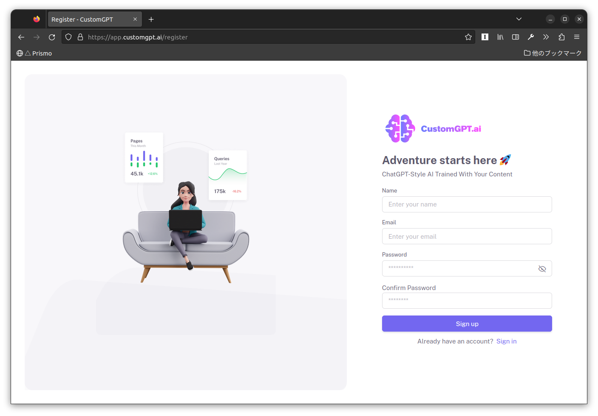
{kind=link}
サインアップが完了するとこんな画面になる。
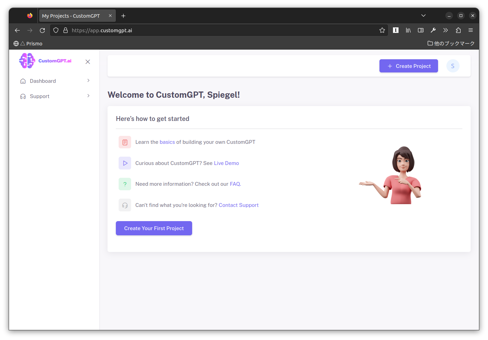
{kind=link}
この時点ではまだ料金は発生しない。 “Create Your First Project” でプロジェクトを作成しよう。 ここで初めて料金が提示される。
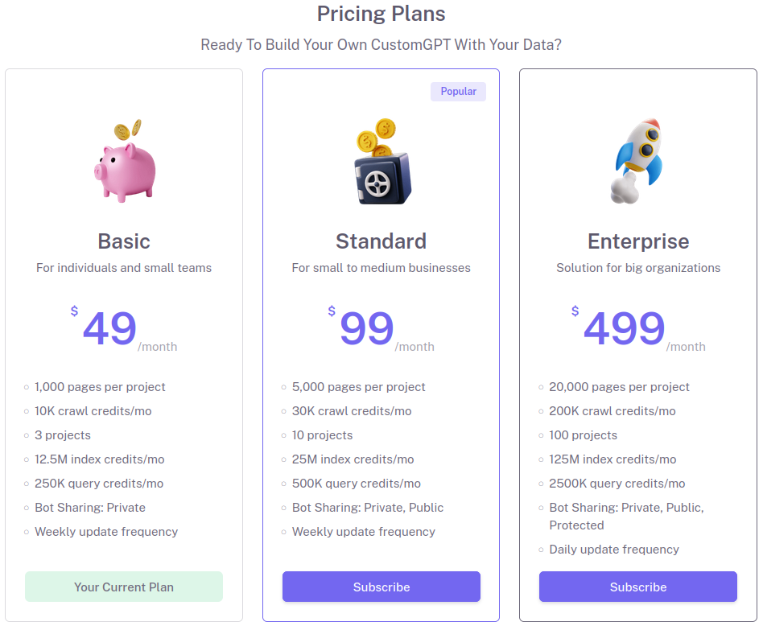
{kind=link}
お試しに月1万円以上払う財力はないので，ここは Basic プランで（それでも日本円で6K円以上するけど）。 ページの読み込みが1,000ページまでとかチャット Bot が公開できないとかの制約があるが，お試しなら問題ないだろう。
なお，サブスクリプションは “Billing” の設定画面でいつでも解約できる。
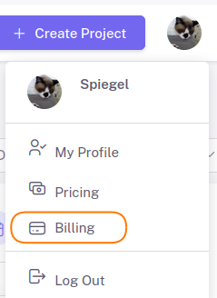
{kind=link}
プランを決めたらいよいよプロジェクトのセットアップへ。
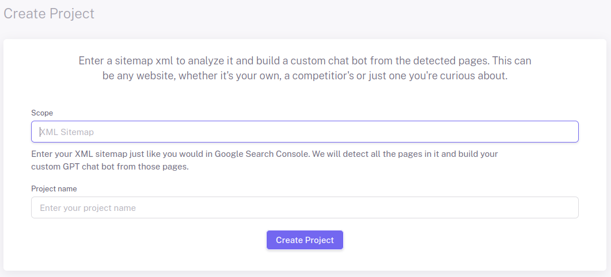
{kind=link}
プロジェクト名は任意で。
スコープには対象となるサイトの sitemap.xml を指定する。
上手く行けばこんな画面になる。
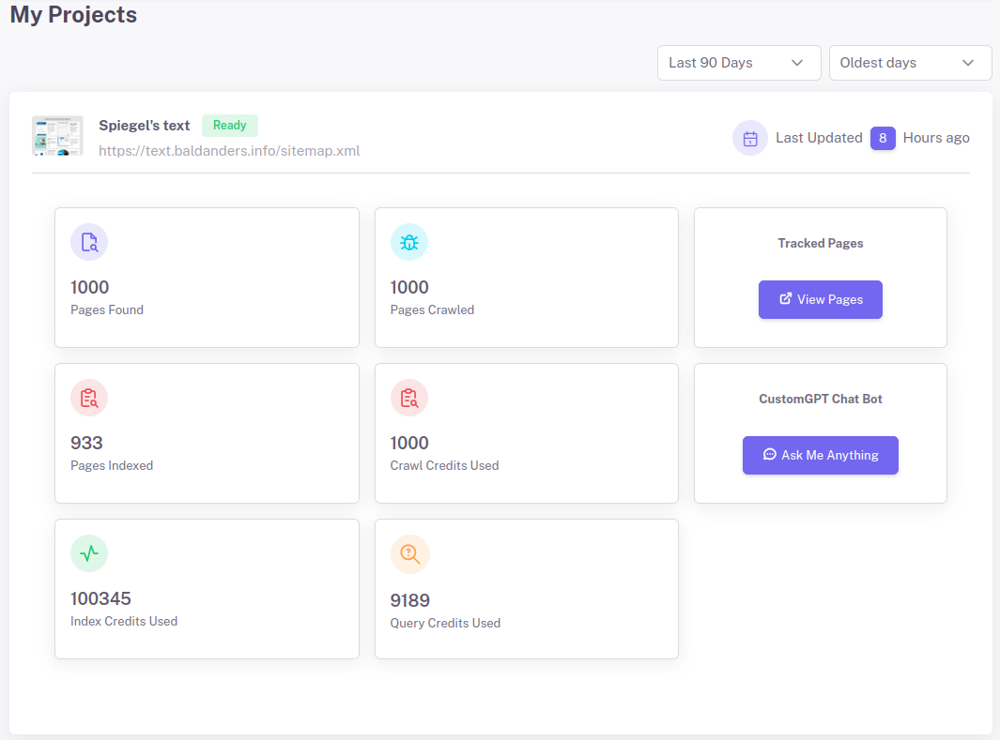
{kind=link}
では “Ask Me Anything” からチャットボットへ移動し，いくつか質問してみよう。
質問してみる
ピープルウェアについて教えて
まずは軽く。
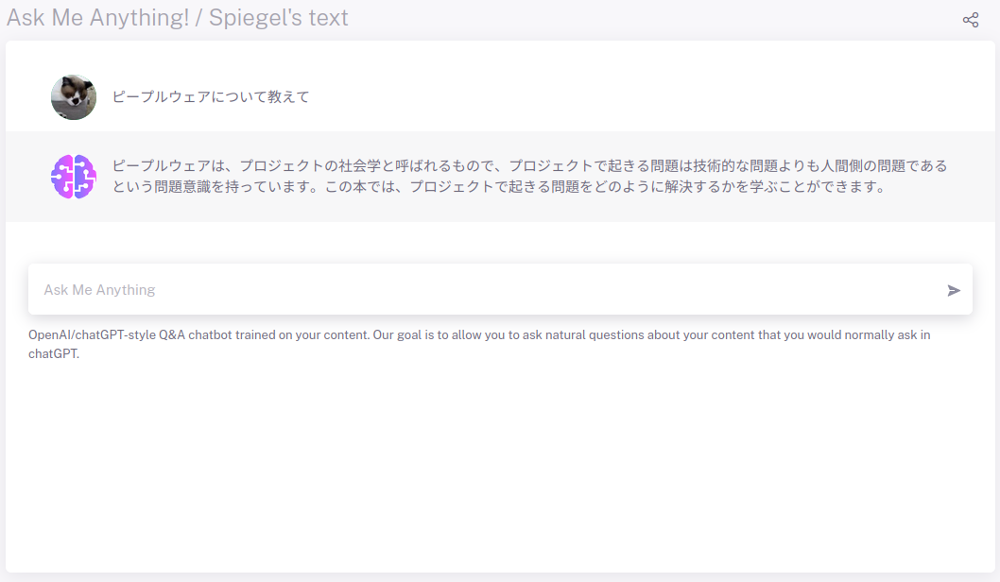
{kind=link}
ピープルウェアは、プロジェクトの社会学と呼ばれるもので、プロジェクトで起きる問題は技術的な問題よりも人間側の問題であるという問題意識を持っています。この本では、プロジェクトで起きる問題をどのように解決するかを学ぶことができます。
んー。 これって昨日書いた記事の要約だな。 まぁ，無難な答え？
最近の Go 言語の脆弱性情報について
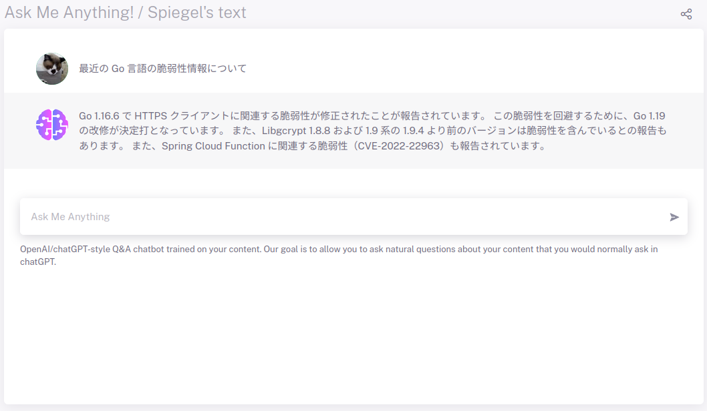
{kind=link}
Go 1.16.6 で HTTPS クライアントに関連する脆弱性が修正されたことが報告されています。 この脆弱性を回避するために、Go 1.19 の改修が決定打となっています。 また、Libgcrypt 1.8.8 および 1.9 系の 1.9.4 より前のバージョンは脆弱性を含んでいるとの報告もあります。 また、Spring Cloud Function に関連する脆弱性（CVE-2022-22963）も報告されています。
いやいやいや（笑） GnuPG や Spring Framework の脆弱性情報と混ざっとるがな。 ついでに CVE-2022-22963 について訊いてみた。
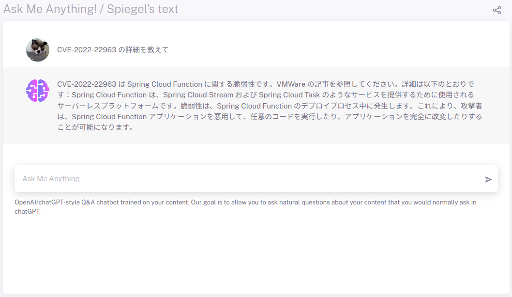
{kind=link}
CVE-2022-22963 は Spring Cloud Function に関する脆弱性です。VMWare の記事を参照してください。詳細は以下のとおりです：Spring Cloud Function は、Spring Cloud Stream および Spring Cloud Task のようなサービスを提供するために使用されるサーバーレスプラットフォームです。脆弱性は、Spring Cloud Function のデプロイプロセス中に発生します。これにより、攻撃者は、Spring Cloud Function アプリケーションを悪用して、任意のコードを実行したり、アプリケーションを完全に改変したりすることが可能になります。
Spring Cloud Function の説明ってこれで合ってるっけ？ 合ってるような？ 私のブログサイトでは Spring Cloud Function そのものについて解説してない筈なので，他所から取ってきた知識なんだろうな，多分。
自転車で速く走れるようになりたい
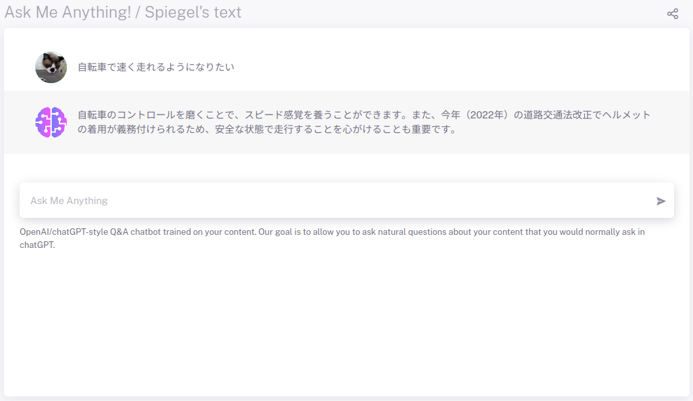
{kind=link}
自転車のコントロールを磨くことで、スピード感覚を養うことができます。また、今年（2022年）の道路交通法改正でヘルメットの着用が義務付けられるため、安全な状態で走行することを心がけることも重要です。
間違ってない気はするが… 質問がふわっとしてるから答えもふわっとしてるのか？ ちなみにヘルメット着用の（努力）義務化は今年2023年4月から施行される。
最近の Twitter について
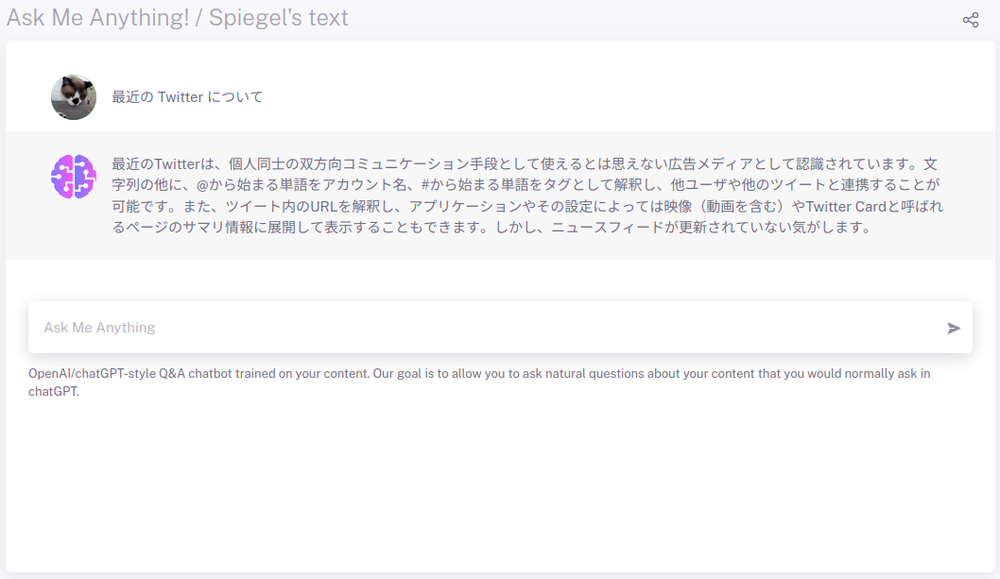
{kind=link}
最近のTwitterは、個人同士の双方向コミュニケーション手段として使えるとは思えない広告メディアとして認識されています。文字列の他に、@から始まる単語をアカウント名、#から始まる単語をタグとして解釈し、他ユーザや他のツイートと連携することが可能です。また、ツイート内のURLを解釈し、アプリケーションやその設定によっては映像（動画を含む）やTwitter Cardと呼ばれるページのサマリ情報に展開して表示することもできます。しかし、ニュースフィードが更新されていない気がします。
ちょっと何言ってるか分からない… これって私が書いた内容を適当に切り貼りしてるだけだな。 文章のコラージュ？
Fediverse とは
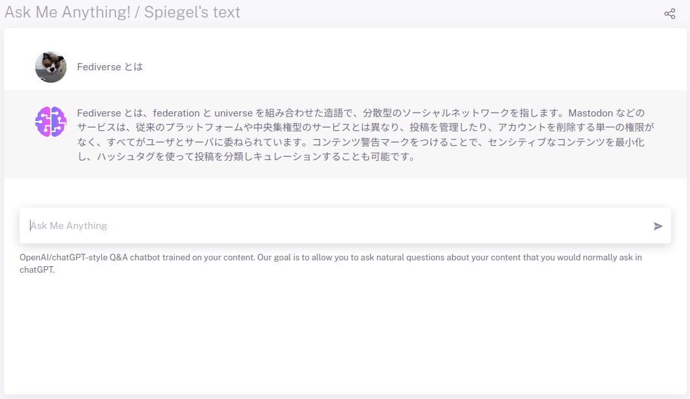
{kind=link}
Fediverse とは、federation と universe を組み合わせた造語で、分散型のソーシャルネットワークを指します。Mastodon などのサービスは、従来のプラットフォームや中央集権型のサービスとは異なり、投稿を管理したり、アカウントを削除する単一の権限がなく、すべてがユーザとサーバに委ねられています。コンテンツ警告マークをつけることで、センシティブなコンテンツを最小化し、ハッシュタグを使って投稿を分類しキュレーションすることも可能です。
これはまぁまぁ。 文章として成立している（笑） 最後の一文の内容には言及したことがないので，これも他所から取ってきた知識なんだろう。
作文ツール？
考えてみれば当たり前だが， CustomGPT.ai は読み込んだページを「知識」として「作文」するツールって感じ。
例えば、製品のマニュアルやFAQを学習させることで「この製品の電源スイッチはどこにありますか？」「マニュアルからオートにモードに切り替える命令は？」といった、特定の製品に特化した質問に的確に答えられるチャットBotの開発などに用いることが想定されます。
とあるように，製品情報等を読み込ませて要約させたり組み合わせたりするのがいいんだろう。 うちのブログみたいなのを読み込ませても難解ポエムになるだけかも。
まぁ，でも，折角お金を払ったんだし，もうしばらく遊んでみますかね。